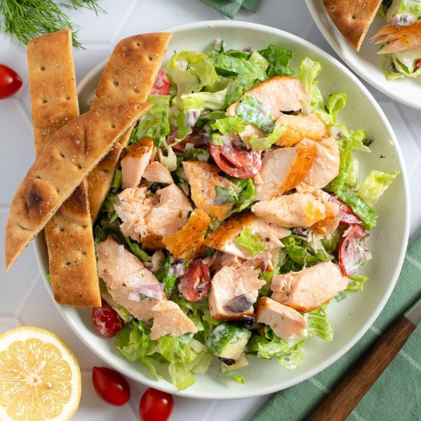

Greek Salmon Salad with Tomato, Olives, Yogurt Dressing & Breadsticks

Prep Time
35 min
Nutrition (per serving)
680.9 kcalCalories
50.8 gProtein
48.1 gCarbs
32.7 gFat
Full nutrition table
| Calories | 680.9 kcal |
| Total fat | 32.7 g |
| Saturated fat | 7.9 g |
| Trans fat | 0.3 g |
| Cholesterol | 96.7 mg |
| Sodium | 628.2 mg |
| Carbohydrates | 48.1 g |
| Fiber | 10 g |
| Sugars | 10.2 g |
| Protein | 50.8 g |
| Potassium | 1980.9 mg |
| Calcium | 273.9 mg |
| Iron | 6.8 mg |
| Vitamin A | 1673.1 IU |
| Vitamin C | 37.3 mg |
| Vitamin D | 618.9 IU |
Cookware
Ingredients
- 1English cucumber
- 2flatbreads or naan
- 1 small bunchfresh dill
- 1 pintgrape tomatoes
- ½ cupKalamata olives, pitted
- 1lemon
- ½ cupplain Greek yogurt
- 2 headsromaine lettuce
- 1 ½ lbsalmon fillet
- 1shallot
- black pepper
- extra virgin olive oil
- garlic powder
- oregano, dried
- salt
Steps
- Preheat oven to 425°F.
- Drizzle oil over flatbread, season with spices, and cut into 1½-inch wide strips; transfer to a baking sheet pan. Place in the oven (it doesn't have to be fully heated) and bake until crispy, 8-10 minutes. Remove from oven.4 tsp extra virgin olive oil
2 flatbreads or naan
½ tsp garlic powder
⅛ tsp salt
⅛ tsp black pepper - Meanwhile, preheat a large skillet over medium-high heat.
- While the skillet heats up, pat the salmon dry with paper towels and place, skin-side down, on a plate. Season with spices on the top-side.1 ½ lb salmon fillet
1 tsp oregano, dried
½ tsp salt
½ tsp black pepper - Once the skillet is hot, add oil and swirl to coat the bottom. Add salmon, skin-side down, and cook until skin is crispy and flesh is opaque, 3-4 minutes per side. Transfer to a clean plate and set aside.4 tsp extra virgin olive oil
- While the salmon is cooking, wash and dry the fresh produce.1 small bunch fresh dill
1 lemon
1 English cucumber
1 pint grape tomatoes
2 heads romaine lettuce - Shave dill leaves off the stems; discard stems and mince the leaves. Place in a large bowl.
- Juice lemon into the bowl with the dill.
- Peel and mince shallot. Add to the bowl along with yogurt, water, salt, and pepper; stir to combine the dressing.1 shallot
½ cup plain Greek yogurt
2 tbsp water
¼ tsp salt
¼ tsp black pepper - Trim and quarter cucumber lengthwise, then cut crosswise into bite-sized pieces. Add to the bowl with the dressing.
- Halve grape tomatoes and add to the bowl.
- Roughly chop olives and add to the bowl.½ cup Kalamata olives, pitted
- Chop (or tear) lettuce into bite-sized pieces. Add to the bowl and toss to combine the salad.
- Using a fork or your hands, flake the salmon into bite-sized pieces.
- Divide salad between plates or bowls and top with salmon. Serve with breadsticks on the side and enjoy!